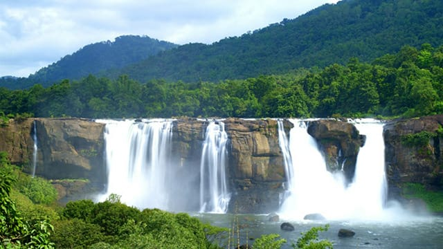
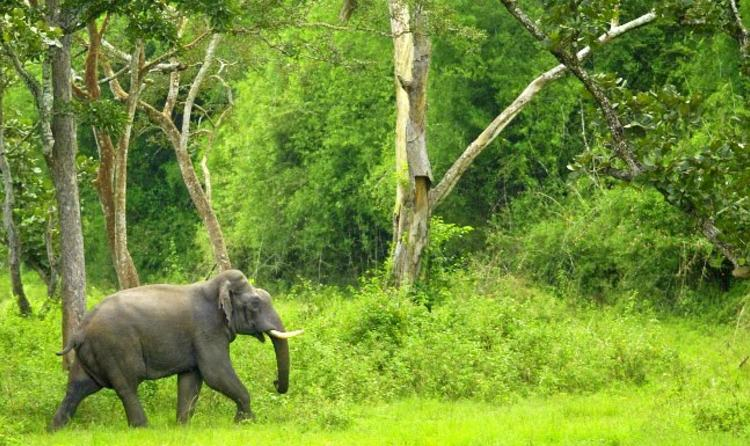

1 / 3

Thrissur
2 / 3

3 / 3

Year of formation : 1949, July 1 Thrissur town was made a Corporation in 2000. Smallest corporation Corporation with the lowest population. Thrissur is the only one corporation in Kerala which has no coastal area. First Medical University in Kerala is established at Thrissur. Thrissur is the cultural capital of Kerala. Thrissur was a part of former Cochin kingdom. The famous 'Thrissur Pooram' held in connection with the festival of Vadakkumnathan temple attracts large number of people. Thrissur is the headquarters of KILA, Kerala Sahitya Academy, Kerala Lalithakala Academy, Kerala Sangeeta Nataka Academy and Kerala Scheduled Caste - Scheduled Tribe Development Corporation. Panchayat with the highest sex ratio in the state : Orumanayur, Thrissur District First legal literate village in Kerala : Ollukkara, is in Thrissur District. St. Thomas Church at Kodungallur, the first Christian Church in Kerala and Cheraman Perumal Mosque at kodungallur, the first mosque in Kerala are in Thrissur district. www.keralapscgk.com | Telegram Channel | Youtube | Facebook Appan Tamburan monument is located at Ayyanthol. Athirapilly, Vazhachal waterfalls are in Thrissur district. Ancient port Musiris is there. Puthanpalli the highest Christian church in Asia is located at Thrissur. Forest Research Institute is in Peechi. Famous Temples ; Guruvayur Vishnu temple, Vadakkumnathan, Paramekavu, Koodal Manikka temple at Iringalakuda.